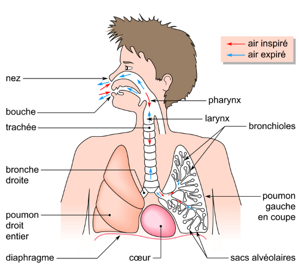

Organisation et histologie de l'appareil respiratoire
Nos cellules doivent recevoir en permanence et en quantité adéquate des molécules de dioxygène (O2) pour pouvoir fabriquer l'énergie nécessaire à leur fonctionnement grâce à la combustion du glucose. Le résidu de cette combustion, le dioxyde de carbone (CO2), doit être évacué de l'organisme.
On appelle respiration les échanges d'O2 et de CO2 entre les cellules et le milieu extérieur. Elle est assurée par l'appareil respiratoire, logé dans la cage thoracique et couplé à la circulation sanguine.
Quelle est la composition de l'appareil respiratoire ?
L'appareil respiratoire est composé :
Voir plus...
Des voies respiratoires, qui permettent les échanges d'air entre l'atmosphère et les poumons. Elles comprennent :
- la cavité nasale, qui filtre, réchauffe et humidifie l'air ;
- le pharynx, qui appartient également à l'appareil digestif ;
- le larynx, qui permet en plus la phonation grâce à la présence de cordes vocales ;
- la trachée, qui purifie, réchauffe et humidifie l'air, et sécrète un mucus protecteur.
Des voies intrapulmonaires, qui amènent l'air des voies respiratoires jusqu'aux alvéoles pulmonaires. Ce sont :
- les bronches, qui purifient, réchauffent et humidifient l'air, et sécrètent un mucus protecteur ;
- les bronchioles.
Des poumons, deux organes spongieux et élastiques, qui renferment chacun environ 350 millions d'alvéoles pulmonaires.
De la plèvre, un double feuillet séreux qui sécrète et contient le liquide pleural, et qui relie les poumons à la cage thoracique tout en les maintenant ouverts.
Le diaphragme est un muscle situé sous les poumons. Il s'abaisse pendant l'inspiration, pour laisser les poumons se distendre, et se relève pendant l'expiration, pour aider les poumons à expulser l'air.
